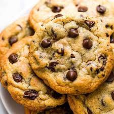
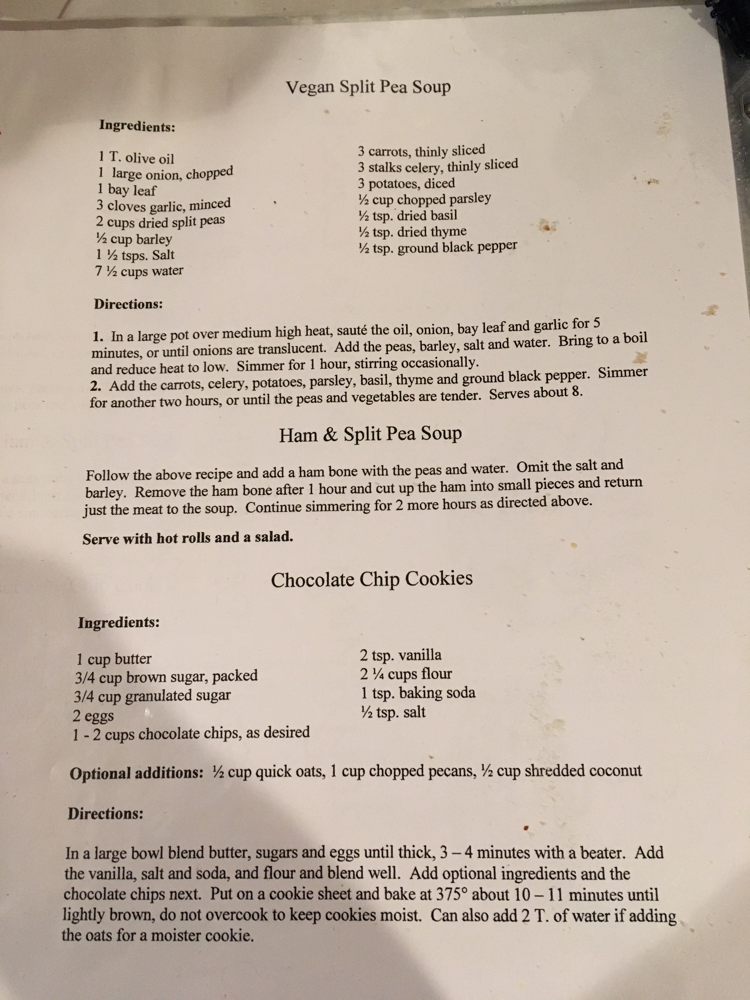

Nicki's Chocolate Chip Cookies

Cookies with bits of chocolate in them
These cookies are my sisters recipe that I have always loved to make
Ingredients
- 1 cup butter
- 3/4 (heaping) cup brown sugar packed
- 3/4 (heaping) cup granulated sugar
- 2 eggs
- 1-2 cups chocolate chips (as desired)
- 2 tsp vanilla
- 2 1/4 cups flour
- 1 tsp baking soda
- 1 tsp salt
Optional additions
- 1/2 cup quick oats
- 1 cup chopped pecans
- 1/2 cup shredded coconut
Steps
-
In a large bowl blend butter, sugars and eggs until thick, 3-4 minutes with a beater.
-
Add the vanilla, salt, baking soda, and flour and blend well.
-
Add chocolate chips and other optional ingredients.
-
(if adding oats, you can add 2 tbsp of water for a moisture cookie)
-
Put on a cookie sheet and bake at 375° about 10-11 minutes until lightly brown, do not overcook to keep cookies moist.

return to homepage